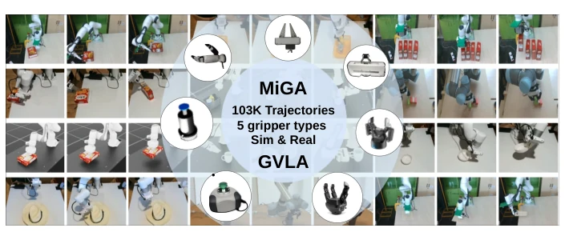
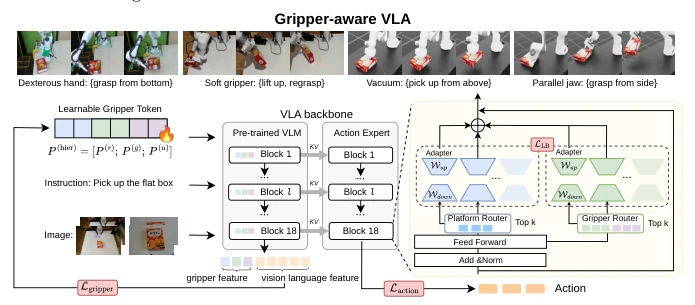

This paper precisely targets the "fake unity" pain point in the VLA field: existing models often assume gripper invariance, yet ignore the essential differences in physical interaction. The authors introduce the MiGA dataset, with 100,000 trajectories covering 5 types of grippers, serving as a key piece of the puzzle for embodied intelligence. The GVLA model, through multi-granularity Tokens and a dual MoA architecture, successfully enables the model to "remember" the characteristics of different grippers. Experiments show a 7.62% improvement over the π0 baseline, with solid data proving that strategy differentiation is indeed important. However, the simulation accuracy for soft grippers in the simulated environment is questionable, and contact forces are not explicitly modeled, causing some failure cases to still stem from physical limitations. Overall, this is a paradigm of data-driven strategy learning, but it is still far from true physical world generalization, after all, between "theoretical discussion" and "actual machine operation", there stands the collision detection of Isaac Lab.
Mainstream existing VLA models such as RT-1 [6], OpenVLA [28], and Open X-Embodiment [44] are mostly trained on parallel gripper data, implicitly assuming that gripper configuration does not affect the policy space. However, in the physical world, suction cups need to adsorb from above, parallel grippers need lateral pushing, and different forms correspond to completely different contact and planning strategies. Existing datasets such as DROID [26] or Bridge V2 [58] lack multi-gripper diversity, leading to models being unable to learn form-dependent interactions. This "one-size-fits-all" assumption limits the model's generalization ability in real complex scenarios, making it impossible for different robot hardware to share policy knowledge under the same task objective. Therefore, constructing datasets containing multi-gripper strategy differences and designing model architectures capable of encoding form information is key to improving VLA robustness.

Fig. 1: We tackle the challenge of gripper-specific grasping in robotics, e.g., a suction cup gripper lifts a thin, flat, DVD-case-like box from above, while a parallel-jaw gripper pushes it to the table edge and grasps it from the side. We first introduce MiGA, a large- scale multi-gripper-aware dataset collected by diverse gripper types. Leveraging this dataset, we then develop a Gripper-aware Vision Language Action (GVLA) model that incorporates gripper conditioning through a new multi-gripper tokenization method and a dual Mixture-of-Adapter. Our approach improves task performance over gripper- agnostic baselines and enables cross-gripper adaptation.
The GVLA framework aims to explicitly embed gripper information into the VLA policy. The overall process is: observation inputs are encoded by a multi-granularity gripper tokenizer, generating three layers of soft Prompts at platform, type, and instance levels, which are concatenated with visual-language features and input into the VLA Backbone. In the action generation phase, a Dual MoA mechanism is introduced, inserted at the last layer of the Transformer. This mechanism includes two parallel routes: platform routing based on robot platform Tokens, and gripper routing based on gripper type and instance Tokens. Each route selects the corresponding Adapter expert pool via Top-K selection, adding the expert output as a residual connection to the hidden state. The loss function includes the Flow Matching loss for action prediction, auxiliary gripper classification loss, and load balancing loss to prevent route collapse. This design retains shared parameters while achieving strategy differentiation through conditional routing, enabling the model to dynamically adjust action distributions based on current hardware.

Fig. 5: An overview of GVLA architecture. Our method extends the pretrained VLA backbone with two gripper-aware components. (Left) Multi-gripper tokenizer encodes gripper knowledge through three-level soft prompts: platform-specific, gripper type- specific, and instance-specific learnable tokens. (Right) A dual MoA routes action to- kens through type-stratified expert pools using a cascaded domain and a gripper router, applying top-k selected adapters as residual connections to adapt to gripper-specific manipulation strategies.
Experiments are based on the MiGA dataset, containing 103K trajectories, 5 types of grippers, 36 tasks, covering Sim and Real environments. Baselines include AnyGrasp [13], GraspVLA [10], π0 [5], and OpenVLA-OFT [27]. Evaluation metrics cover Success Rate (SR), Prediction Error (PE), Behavior Differentiation (CAPD), etc. Results show that GVLA (π0.5 backbone) has an average success rate of 66.00%, an improvement of 7.62% over π0.5, significantly better than traditional two-stage methods. In zero-shot generalization tests, it maintains high success rates when facing new objects. Few-shot adaptation experiments show that training with mixed gripper data can reduce strategy confusion. Real machine verification was completed on UR5, requiring only 10 demonstrations to adapt to new tasks. Ablation studies confirm that removing Type Tokens or MoA both lead to performance degradation, proving the effectiveness of multi-granularity encoding and dual-route design.